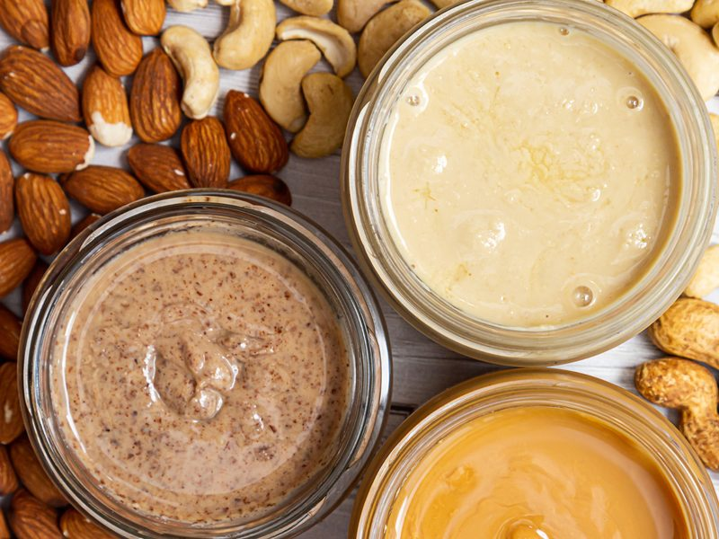
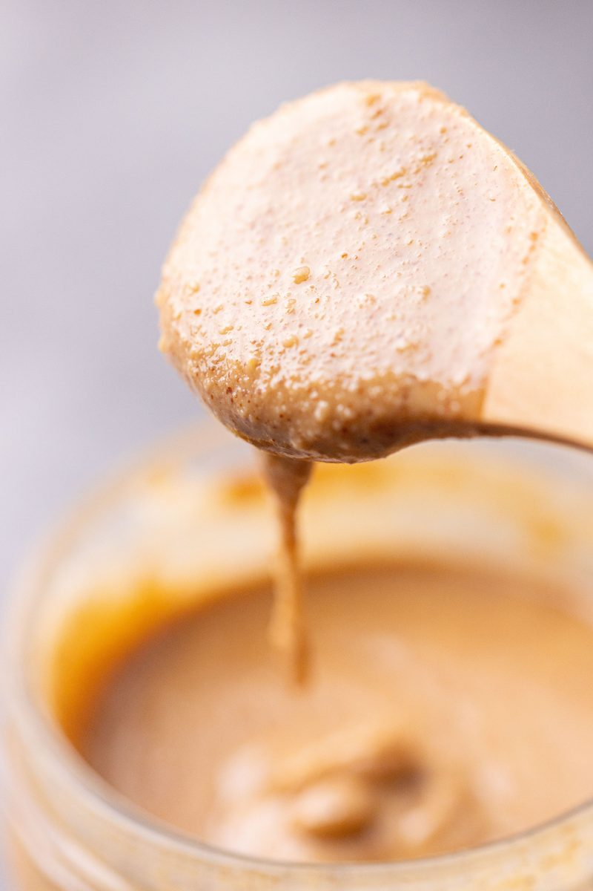
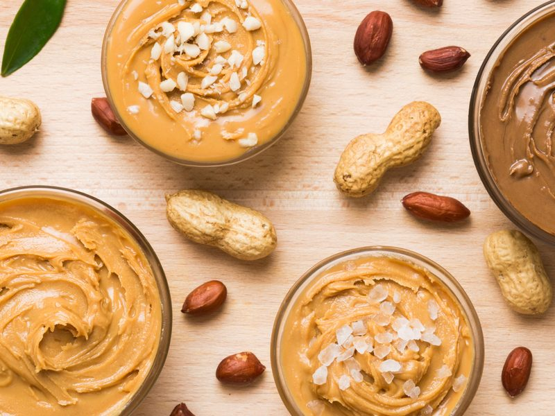

Don't Skimp on the Nut Butter
The jar you grab off the shelf decides how your bake turns out. Thickness is the whole game — here's how to read it before you scoop.
People blame the recipe when a cookie spreads into a puddle or a bar won't hold together. Most of the time it's not the recipe. It's the nut butter.
In a lot of vegan and gluten-free bakes, nut butter isn't a flavor add — it's the structure. It's the fat, part of the binder, and sometimes the only thing holding the whole thing in one piece. Swap a thick jar for a runny one and you've changed the formula without knowing it.
The One Thing to Check
Thickness. That's it. Two jars labeled the same way can behave completely differently, and the label won't tell you which is which.
Here's the test I use: put the jar in the fridge for an hour, then pull it out and scoop. If it holds a firm scoop that keeps its shape, it'll give your bake structure. If it's still loose and pourable cold, it's going to run in the oven and take your bake with it.
Cold is the honest version of a nut butter. Room temperature hides a lot.

Where the Popular Ones Land
Not every jar behaves the same, and it's worth knowing which side of the line yours falls on before you commit it to a recipe. Roughly where the common ones sit:

| Nut butter | Cold consistency | In a bake |
|---|---|---|
| Peanut (natural, stir-the-oil kind) | Firms up thick | Reliable structure — the workhorse |
| Almond | Firm to thick | Holds well, a touch drier than peanut |
| Sunflower seed butter | Firm | Holds like peanut; can turn baked goods green (harmless) |
| Cashew | Soft, stays loose | Adds richness, little structure — pair with a firmer one |
| Tahini | Pourable even cold | Great flavor, almost no hold — treat it like oil |
| Big-brand "no-stir" (Jif, Skippy style) | Firm but stabilized | Consistent, but added oils and sugar shift a tuned formula |
The ones that hold
Natural peanut and almond butter — the kind with an oil layer on top you have to stir in — firm up when cold and give you real structure. These are the ones I build around. Sunflower seed butter behaves the same way and is my go-to when something needs to be nut-free.
The ones that struggle
Tahini and cashew butter stay loose even cold. They taste great and they're rich, but they won't hold a bake together on their own. Use them for flavor and moisture, not for structure — and if a recipe leans on nut butter to bind, don't make it the only one in the bowl.
What It Means for You
- Match the jar to the job. Structure bake? Reach for firm peanut, almond, or sunflower. Just flavor and moisture? Cashew or tahini is fine.
- Stir the natural stuff all the way down. The oil at the top isn't a nuisance — it's part of the fat. Pour it off and your bake goes dry.
- Watch the swaps. Trading peanut for tahini isn't a one-to-one. You're pulling out structure, so expect more spread and a softer set.
- Don't cheap out. A thin, watery, cut-with-oil jar is the one that ruins a bake. This is the ingredient worth the extra dollar.
Buy the Plain Stuff
One ingredient. Nuts. Maybe salt. No added palm oil, no sugar, no "no-stir" stabilizers. The stabilized jars are engineered to stay spreadable on your counter, which is exactly the behavior you don't want when you're counting on the fat to firm up and hold. The plain, separate-in-the-jar kind is the one that bakes right.
So — what's in your cupboard? Tell me what you've got and I'll tell you what to make with it.